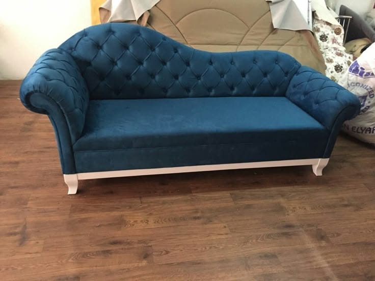
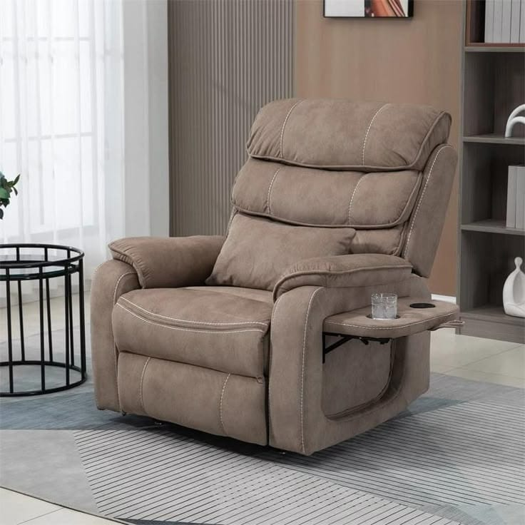
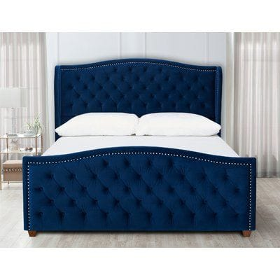

Custom Sofas, Sofa Repair & Furniture in Chennai
Browse real furniture designs, choose a design and send the exact photo on WhatsApp. We handle custom sizing, upholstery, cushions, repairs and furniture work across Chennai.
Explore Collection →
Recliners
Browse genuine recliner designs without mixing them with office chairs.

Headboards & Cots
Premium upholstered bedroom designs and custom-size enquiries.
Shop by Category
Every catalogue image is assigned to the most relevant furniture category.
Featured Furniture
Chennai Furniture FAQs
Answers for sofa, chair, recliner and bedroom furniture enquiries.
Do you repair sofas in Chennai?
Yes. Sofa repair, alteration, cushion replacement, upholstery and refurbishment enquiries can be discussed by WhatsApp.
Can I request a different fabric colour?
Yes. Fabric colours can be discussed for custom work. The catalogue never swaps in an unrelated photo and labels it as the same product.
Do you have Front, Side and Back photos?
Only genuine supplied angles are displayed. The source catalogue contains mostly single-view photos, so the website does not fabricate a Side or Back image.
How do I get a quotation?
Send the exact catalogue photo, your preferred size and required work to WhatsApp at 9962979410.